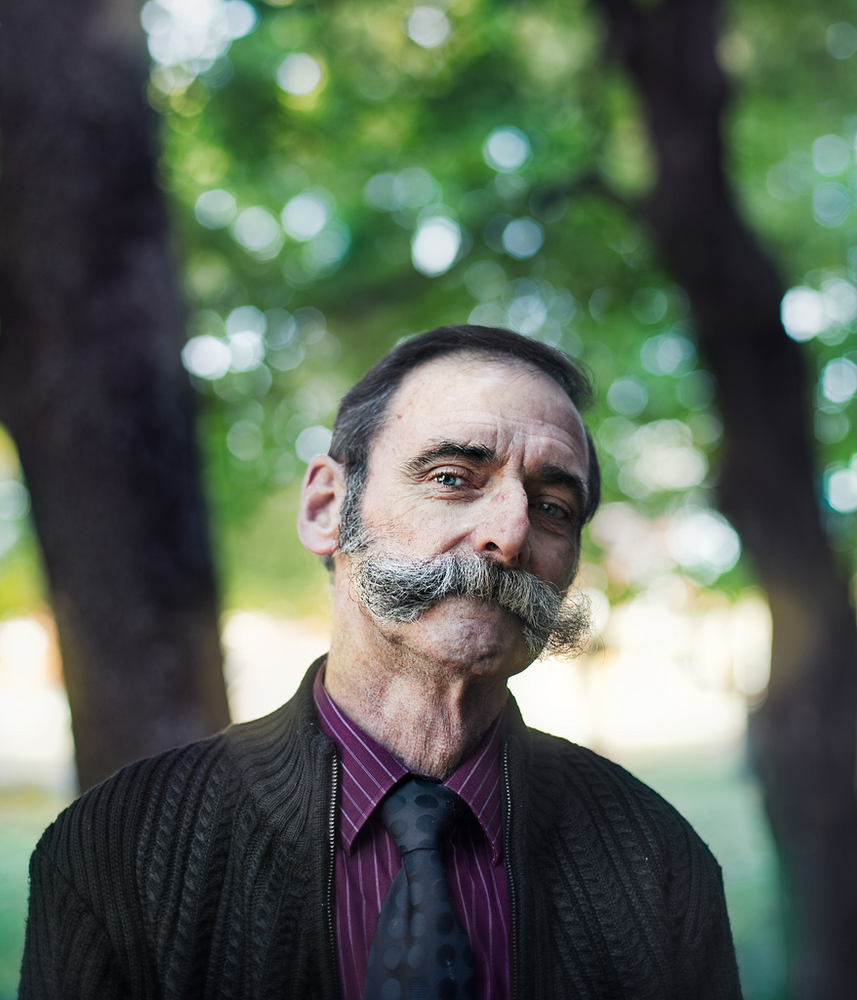
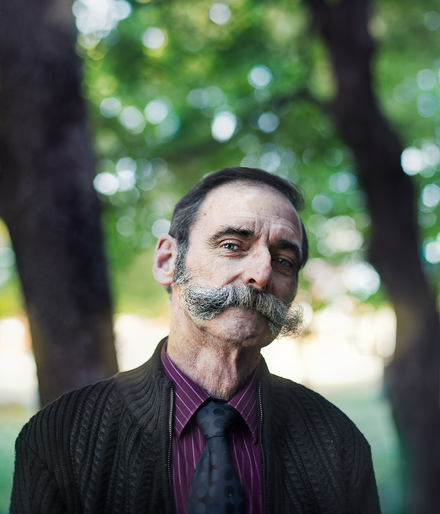

Stranger
Stranger by Benoit Paillé is one of the best sets I’ve seen on flickr in a while. I love that the quality and style is consistent across different cameras, both digital and medium format.

Stranger by Benoit Paillé is one of the best sets I’ve seen on flickr in a while. I love that the quality and style is consistent across different cameras, both digital and medium format.